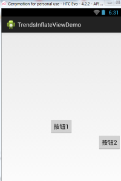

この節のイントロダクション：
今回も引き続き、Androidシステムサービスの中のLayoutInflater(レイアウトサービス)を紹介します。レイアウトと言えば、皆さんが最初に思い浮かべるのは、レイアウトのXMLを書き終えて、ActivityのsetContentView()を呼び出してレイアウトを読み込み、それを画面に表示する、ということではないでしょうか~ 実はこの内部では、やはりこのLayoutInflaterが使われており、Androidに内蔵されているPullパーサーでレイアウトを解析しています。一般的に、Androidでレイアウトを動的に読み込んだりコントロールを追加したりする際に多く使われます。この節では、実際の開発におけるいくつかの使い方を学んでいきましょう~
公式APIドキュメント：LayoutInflater
1. LayoutInflaterの関連紹介
1) Layoutとは何か？
答え：レイアウトを読み込むためのシステムサービスであり、Layout XMLファイルに対応するViewオブジェクトをインスタンス化するものです。直接使用することはできません。次のgetLayoutInflater( )メソッドまたはgetSystemService( )メソッドを使用して、現在のContextにバインドされたLayoutInflaterインスタンスを取得する必要があります!
2) LayoutInflaterの使い方
① LayoutInflaterインスタンスを取得する3つの方法：
LayoutInflater inflater1 = LayoutInflater.from(this); LayoutInflater inflater2 = getLayoutInflater(); LayoutInflater inflater3 = (LayoutInflater) getSystemService(LAYOUT_INFLATER_SERVICE);
PS: 後の2つは実際には内部で最初の方法を使用しています~
② レイアウトを読み込む方法：
public View inflate(int resource, ViewGroup root, boolean attachToRoot) このメソッドの3つのパラメータは順に以下の通りです：
① 読み込むレイアウトに対応するリソースID
② そのレイアウトの外側にさらに親レイアウトをネストするためのものです。不要な場合はnullを書けばOKです!
③ 読み込むレイアウトファイルの最外層にrootレイアウトを被せるかどうか。このパラメータを設定しない場合、 rootがnullでなければ、デフォルトでtrueになります。 rootがnullの場合、attachToRootは効果がありません! rootがnullでなくattachToRootがtrueの場合、読み込んだレイアウトファイルの最外層にrootレイアウトがネストされます; falseの場合、rootは効果を失います! 簡単に理解すると：読み込んだレイアウトにrootの外側コンテナを追加するかどうか、ということです~!
③ LayoutInflater.LayoutParamsを使用して関連する属性を設定する:
例えばRelativeLayoutでは、addRuleメソッドでルールを追加することもできます。位置を設定する際に、親コンテナを基準にするのか、子コントロールを基準にするのか、あるいはmarginなどを設定するのか、それはあなた次第です~
2. 純粋なJavaコードでレイアウトを読み込む
私たちはXMLを使って必要なレイアウトを生成することにすっかり慣れていますが、特定の状況では、Javaコードを使ってレイアウトにコントロールやレイアウトを動的に追加する必要があります!
しかし、Androidのページレイアウトを完全にJavaコードで記述することはお勧めしません。まず第一にコード量が多くなり、多くなると混乱しやすく、ビジネスの分離にも不利です。xmlでレイアウトを作成し、Javaコードで内部のコントロールを修正することをお勧めします。もちろん、Javaで動的にコントロールを追加する必要がある場合もあります!
純粋なJavaコードでレイアウトを読み込むフロー：
——Step 1：
①コンテナを作成する:LinearLayout ly = new LinearLayout(this);
②コンポーネントを作成する:Button btnOne = new Button(this);
——Step 2:
コンテナまたはコンポーネントに関連する属性を設定できます： 例えば：LinearLayoutコンポーネントの配置方向を設定できます：ly.setOrientation(LinearLayout.VERTICAL);また、コンポーネントも同様です：例えばButton：btnOne.setText("按钮1");属性の設定方法についてはAndroidのAPIを参照してください。通常、xmlで設定する属性は先頭に「set」を付けるだけで済みます。例えばsetPadding(左,上,右,下);
——Step 3：
コンポーネントまたはコンテナをコンテナに追加します。このとき、コンポーネントの追加位置やサイズを設定する必要があるかもしれません： LayoutParamsというクラスを使用する必要があります。これはレイアウトコンテナの情報パッケージと考えることができます! 位置とサイズなどの情報をカプセル化したクラスです! まずサイズを設定する方法を説明します：(先ほどのLinearLayoutはコンテナに応じて変更できます)
LinearLayout.LayoutParams lp1 = new LinearLayout.LayoutParams(
LayoutParams.WRAP_CONTENT, LayoutParams.WRAP_CONTENT);
とても簡単です。次に位置の設定ですが、位置を設定する場合、通常考慮するのはRelativeLayoutだけです! このときLayoutParamsのaddRule( )メソッドを使用します! addRule( )は複数追加できますよ! コンポーネントの親コンテナ内での位置を設定し、
例えばコンポーネントの整列方法を設定する:
RelativeLayout rly = new RelativeLayout(this);
RelativeLayout.LayoutParams lp2 = new RelativeLayout.LayoutParams(
LayoutParams.WRAP_CONTENT, LayoutParams.WRAP_CONTENT);
lp2.addRule(RelativeLayout.ALIGN_PARENT_BOTTOM);
Button btnOne = new Button(this);
rly.addView(btnOne, lp2);
他のコンポーネントを基準にした整列方法： (欠点として、基準となるコンポーネントに手動でidを設定する必要があります。それは手動!!!!) 例えば：btnOneを中央に設定した後、BtnTwoをbtnOneの下かつ親コンテナの右側に配置します!
public class MainActivity extends Activity {
@Override
protected void onCreate(Bundle savedInstanceState) {
super.onCreate(savedInstanceState);
RelativeLayout rly = new RelativeLayout(this);
Button btnOne = new Button(this);
btnOne.setText("按钮1");
Button btnTwo = new Button(this);
btnTwo.setText("按钮2");
// 为按钮1设置一个id值
btnOne.setId(123);
// 设置按钮1的位置,在父容器中居中
RelativeLayout.LayoutParams rlp1 = new RelativeLayout.LayoutParams(
LayoutParams.WRAP_CONTENT, LayoutParams.WRAP_CONTENT);
rlp1.addRule(RelativeLayout.CENTER_IN_PARENT);
// 设置按钮2的位置,在按钮1的下方,并且对齐父容器右面
RelativeLayout.LayoutParams rlp2 = new RelativeLayout.LayoutParams(
LayoutParams.WRAP_CONTENT, LayoutParams.WRAP_CONTENT);
rlp2.addRule(RelativeLayout.BELOW, 123);
rlp2.addRule(RelativeLayout.ALIGN_PARENT_RIGHT);
// 将组件添加到外部容器中
rly.addView(btnTwo, rlp2);
rly.addView(btnOne, rlp1);
// 设置当前视图加载的View即rly
setContentView(rly);
}
}
——step 4：
setContentView( )メソッドを呼び出してレイアウトオブジェクトを読み込むだけです! また、コンテナ内のViewを削除したい場合は、コンテナのremoveView(削除したいコンポーネント); を呼び出します。
実行画面：

3. JavaコードでコントロールまたはXMLレイアウトを動的に追加する
2つ目では、純粋なJavaコードでレイアウトを読み込む方法を説明しましたが、実際にはあまり使われず、より多くの場合はViewコントロールを動的に追加したり、XMLレイアウトを動的に読み込んだりします!
1) JavaコードでViewを動的に追加する
コンポーネントを動的に追加する書き方は2つあります。違いは、先にsetContentView(R.layout.activity_main); が必要かどうかです。
以下に、2つの異なる書き方でButtonを追加する例を示します：activity_main.xml：
<RelativeLayout xmlns:android="http://schemas.android.com/apk/res/android"
android:id="@+id/RelativeLayout1"
android:layout_width="match_parent"
android:layout_height="match_parent" >
<TextView
android:id="@+id/txtTitle"
android:layout_width="match_parent"
android:layout_height="wrap_content"
android:text="我是xml文件加载的布局"/>
</RelativeLayout>
まずレイアウトファイルを書きます：
public class MainActivity extends Activity {
@Override
protected void onCreate(Bundle savedInstanceState) {
super.onCreate(savedInstanceState);
Button btnOne = new Button(this);
btnOne.setText("我是动态添加的按钮");
RelativeLayout.LayoutParams lp2 = new RelativeLayout.LayoutParams(
LayoutParams.WRAP_CONTENT, LayoutParams.WRAP_CONTENT);
lp2.addRule(RelativeLayout.CENTER_IN_PARENT);
LayoutInflater inflater = LayoutInflater.from(this);
RelativeLayout rly = (RelativeLayout) inflater.inflate(
R.layout.activity_main, null)
.findViewById(R.id.RelativeLayout1);
rly.addView(btnOne,lp2);
setContentView(rly);
}
}
1つ目の方法：setContentView()でレイアウトファイルを先に読み込む必要はありません：
public class MainActivity extends Activity {
@Override
protected void onCreate(Bundle savedInstanceState) {
super.onCreate(savedInstanceState);
setContentView(R.layout.activity_main);
Button btnOne = new Button(this);
btnOne.setText("我是动态添加的按钮");
RelativeLayout.LayoutParams lp2 = new RelativeLayout.LayoutParams(
LayoutParams.WRAP_CONTENT, LayoutParams.WRAP_CONTENT);
lp2.addRule(RelativeLayout.CENTER_IN_PARENT);
RelativeLayout rly = (RelativeLayout) findViewById(R.id.RelativeLayout1);
rly.addView(btnOne,lp2);
}
}
2つ目の方法：setContentView()でレイアウトファイルを先に読み込む必要はありません：：
分析とまとめ
コードはとても簡単です。ボタンを作成した後、LayoutParamsオブジェクトも作成し、Buttonのサイズを設定します。また、addRule()メソッドでButtonの位置も設定しました!1つ目の方法： LayoutInflateのinflate()メソッドでactivity_mainレイアウトを読み込み、外側のコンテナを取得し、続いてaddViewでボタンをコンテナに追加し、最後にsetContentView()を呼び出します;
2つ目の方法： setContetView()メソッドでレイアウトをすでに読み込んでいるため、このときfindViewByIdで外側のコンテナを見つけ、続いてaddView、最後にsetContentView()を呼び出せばOKです!：すでにsetContetView()メソッドでレイアウトを読み込んでいるため、この時点でfindViewByIdを使ってこの外側のコンテナを見つけ、次にaddViewを呼び出し、最後にsetContentView()を実行すればOKです！
また、このsetContentView( )が設定するビューノードは、XML全体のルートノードです!
2) JavaコードでXMLレイアウトを動的に読み込む
次に、別のものを試してみましょう。今回は読み込むのはxmlファイルです!xmlファイルを動的に追加します!まず、メインのレイアウトファイルと動的に読み込むレイアウトファイルを書きます：
activity_main.xml：
<RelativeLayout xmlns:android="http://schemas.android.com/apk/res/android"
android:id="@+id/RelativeLayout1"
android:layout_width="match_parent"
android:layout_height="match_parent" >
<Button
android:id="@+id/btnLoad"
android:layout_width="match_parent"
android:layout_height="wrap_content"
android:text="动态加载布局"/>
</RelativeLayout>
inflate.xml：
<?xml version="1.0" encoding="utf-8"?>
<LinearLayout xmlns:android="http://schemas.android.com/apk/res/android"
android:layout_width="match_parent"
android:layout_height="match_parent"
android:gravity="center"
android:orientation="vertical"
android:id="@+id/ly_inflate" >
<TextView
android:layout_width="wrap_content"
android:layout_height="wrap_content"
android:text="我是Java代码加载的布局" />
<Button
android:layout_width="wrap_content"
android:layout_height="wrap_content"
android:text="我是布局里的一个小按钮" />
</LinearLayout>
次に、私たちのMainActivity.javaここでxmlレイアウトを動的に読み込みます：
public class MainActivity extends Activity {
@Override
protected void onCreate(Bundle savedInstanceState) {
super.onCreate(savedInstanceState);
setContentView(R.layout.activity_main);
//获得LayoutInflater对象;
final LayoutInflater inflater = LayoutInflater.from(this);
//获得外部容器对象
final RelativeLayout rly = (RelativeLayout) findViewById(R.id.RelativeLayout1);
Button btnLoad = (Button) findViewById(R.id.btnLoad);
btnLoad.setOnClickListener(new OnClickListener() {
@Override
public void onClick(View v) {
//加载要添加的布局对象
LinearLayout ly = (LinearLayout) inflater.inflate(
R.layout.inflate, null, false).findViewById(
R.id.ly_inflate);
//设置加载布局的大小与位置
RelativeLayout.LayoutParams lp = new RelativeLayout.LayoutParams(
LayoutParams.WRAP_CONTENT, LayoutParams.WRAP_CONTENT);
lp.addRule(RelativeLayout.CENTER_IN_PARENT);
rly.addView(ly,lp);
}
});
}
}
実行画面：

コード分析：
① コンテナオブジェクトを取得する:
final RelativeLayout rly = (RelativeLayout) findViewById(R.id.RelativeLayout1);② Inflaterオブジェクトを取得し、同時に追加するレイアウトのxmlを読み込み、findViewByIdで最外層のルートノードを見つける
final LayoutInflater inflater = LayoutInflater.from(this); LinearLayout ly = (LinearLayout) inflater.inflate(R.layout.inflate, null, false) .findViewById(R.id.ly_inflate);③ このコンテナにサイズと位置情報を設定する：
RelativeLayout.LayoutParams lp = new RelativeLayout.LayoutParams( LayoutParams.WRAP_CONTENT, LayoutParams.WRAP_CONTENT); lp.addRule(RelativeLayout.CENTER_IN_PARENT);④ 外側のコンテナに追加する：
rly.addView(ly,lp);
4. LayoutInflaterのinflate()メソッドのソースコード
最後に、LayoutInflaterのinflate()メソッドのソースコードを紹介します。興味があれば見てみてください~ 実はただのPull解析です~
public View inflate(XmlPullParser parser, ViewGroup root, boolean attachToRoot) {
synchronized (mConstructorArgs) {
final AttributeSet attrs = Xml.asAttributeSet(parser);
mConstructorArgs[0] = mContext;
View result = root;
try {
int type;
while ((type = parser.next()) != XmlPullParser.START_TAG &&
type != XmlPullParser.END_DOCUMENT) {
}
if (type != XmlPullParser.START_TAG) {
throw new InflateException(parser.getPositionDescription()
+ ": No start tag found!");
}
final String name = parser.getName();
if (TAG_MERGE.equals(name)) {
if (root == null || !attachToRoot) {
throw new InflateException("merge can be used only with a valid "
+ "ViewGroup root and attachToRoot=true");
}
rInflate(parser, root, attrs);
} else {
View temp = createViewFromTag(name, attrs);
ViewGroup.LayoutParams params = null;
if (root != null) {
params = root.generateLayoutParams(attrs);
if (!attachToRoot) {
temp.setLayoutParams(params);
}
}
rInflate(parser, temp, attrs);
if (root != null && attachToRoot) {
root.addView(temp, params);
}
if (root == null || !attachToRoot) {
result = temp;
}
}
} catch (XmlPullParserException e) {
InflateException ex = new InflateException(e.getMessage());
ex.initCause(e);
throw ex;
} catch (IOException e) {
InflateException ex = new InflateException(
parser.getPositionDescription()
+ ": " + e.getMessage());
ex.initCause(e);
throw ex;
}
return result;
}
}
この節のまとめ：
この節では、AndroidのLayoutInflater(レイアウトサービス)と、Viewやコントロールの動的な読み込みに関することを解説しました。コントロールを学び始めたばかりの方に役立つと思います~ では、以上です。ありがとうございました~
クリックしてノートを共有
ノートは本記事の内容の拡張である必要があります！
記事投稿は、こちらをクリック
登録招待コードの取得方法
ノートを共有する前にログインが必要です！
登録招待コードの取得方法